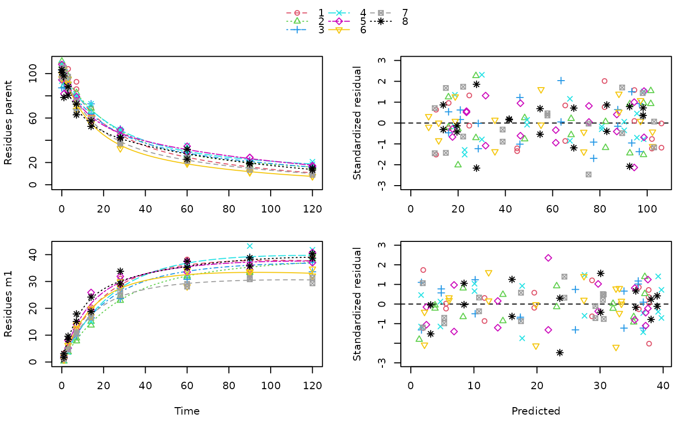

Create a mixed effects model from an mmkin row object
Arguments
- object
An mmkin row object
- ...
Currently not used
- method
The method to be used
- x
A mixed.mmkin object to print
- digits
Number of digits to use for printing.
Value
An object of class 'mixed.mmkin' which has the observed data in a single dataframe which is convenient for plotting
Examples
sampling_times = c(0, 1, 3, 7, 14, 28, 60, 90, 120)
n_biphasic <- 8
err_1 = list(const = 1, prop = 0.07)
DFOP_SFO <- mkinmod(
parent = mkinsub("DFOP", "m1"),
m1 = mkinsub("SFO"),
quiet = TRUE)
set.seed(123456)
log_sd <- 0.3
syn_biphasic_parms <- as.matrix(data.frame(
k1 = rlnorm(n_biphasic, log(0.05), log_sd),
k2 = rlnorm(n_biphasic, log(0.01), log_sd),
g = plogis(rnorm(n_biphasic, 0, log_sd)),
f_parent_to_m1 = plogis(rnorm(n_biphasic, 0, log_sd)),
k_m1 = rlnorm(n_biphasic, log(0.002), log_sd)))
ds_biphasic_mean <- lapply(1:n_biphasic,
function(i) {
mkinpredict(DFOP_SFO, syn_biphasic_parms[i, ],
c(parent = 100, m1 = 0), sampling_times)
}
)
set.seed(123456L)
ds_biphasic <- lapply(ds_biphasic_mean, function(ds) {
add_err(ds,
sdfunc = function(value) sqrt(err_1$const^2 + value^2 * err_1$prop^2),
n = 1, secondary = "m1")[[1]]
})
# \dontrun{
f_mmkin <- mmkin(list("DFOP-SFO" = DFOP_SFO), ds_biphasic, error_model = "tc", quiet = TRUE)
f_mixed <- mixed(f_mmkin)
print(f_mixed)
#> Kinetic model fitted by nonlinear regression to each dataset
#> Structural model:
#> d_parent/dt = - ((k1 * g * exp(-k1 * time) + k2 * (1 - g) * exp(-k2 *
#> time)) / (g * exp(-k1 * time) + (1 - g) * exp(-k2 * time)))
#> * parent
#> d_m1/dt = + f_parent_to_m1 * ((k1 * g * exp(-k1 * time) + k2 * (1 - g)
#> * exp(-k2 * time)) / (g * exp(-k1 * time) + (1 - g) *
#> exp(-k2 * time))) * parent - k_m1 * m1
#>
#> Data:
#> 271 observations of 2 variable(s) grouped in 8 datasets
#>
#> <mmkin> object
#> Status of individual fits:
#>
#> dataset
#> model 1 2 3 4 5 6 7 8
#> DFOP-SFO OK OK OK OK OK C OK OK
#>
#> C: Optimisation did not converge:
#> iteration limit reached without convergence (10)
#> OK: No warnings
#>
#> Mean fitted parameters:
#> parent_0 log_k_m1 f_parent_qlogis log_k1 log_k2
#> 100.605312 -8.758664 -0.001917 -3.350887 -3.990017
#> g_qlogis
#> -0.091167
plot(f_mixed)

# }